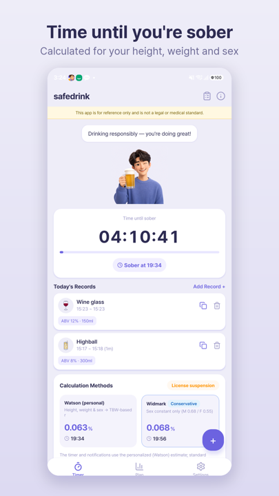
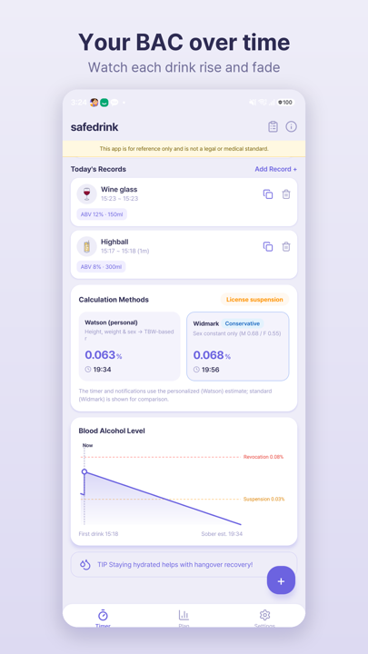
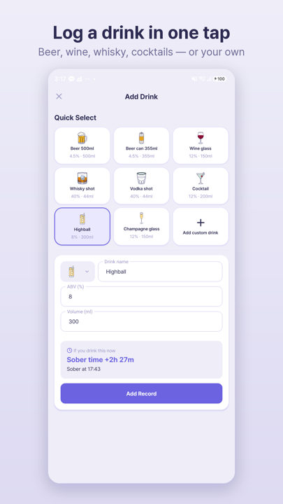
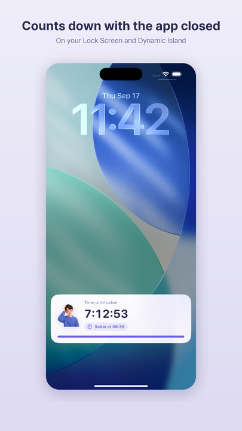

Tuned to your body
Uses your height, weight, sex and age. The same drink hits people differently, so Safedrink estimates your BAC from your own body water.
Free for iPhone & Android
Log each drink as you go.
Safedrink estimates your BAC and the time you'll be fully sober — then counts it down for you.
No sign-up needed · Results are estimates and vary from person to person.
From your first drink to the last minute.
Your drinks, tracked
Uses your height, weight, sex and age. The same drink hits people differently, so Safedrink estimates your BAC from your own body water.
Beer, wine, whisky, cocktails — one tap each. Before adding another, see how much longer it would keep you from sobering up.
The countdown keeps going after you close the app — on the Lock Screen and Dynamic Island on iPhone, and in the notification shade on Android.
Three simple steps
Enter your height, weight, sex and birth year so the estimate fits your body.
Pick what you drank, how much and when you finished it. Had another? Add it.
See when you'll be fully sober, the time left, and a chart of your BAC over time.
Your distribution factor (r) comes from the Watson total-body-water formula and feeds the Widmark formula, with an elimination rate of 0.015% per hour. Real elimination varies with health, food and individual differences, so the time shown does not guarantee you are actually sober.
Inside the app
From the time left to every drink you logged. The BAC chart also shows reference lines at 0.03% and 0.08% — the license suspension and revocation limits under South Korean law.
Swipe sideways to see four app screens.




Start in seconds
Only what you need.
No account, no setup.
Open the app and start logging — no account required.
Your profile and drink history stay on your device by default. Optionally sign in with Apple or Google to back up and restore after a reinstall or on a new phone.
No ads on iPhone. On Android there is one small banner, removable forever with a one-time purchase.
See exactly how it works — the code is on GitHub.